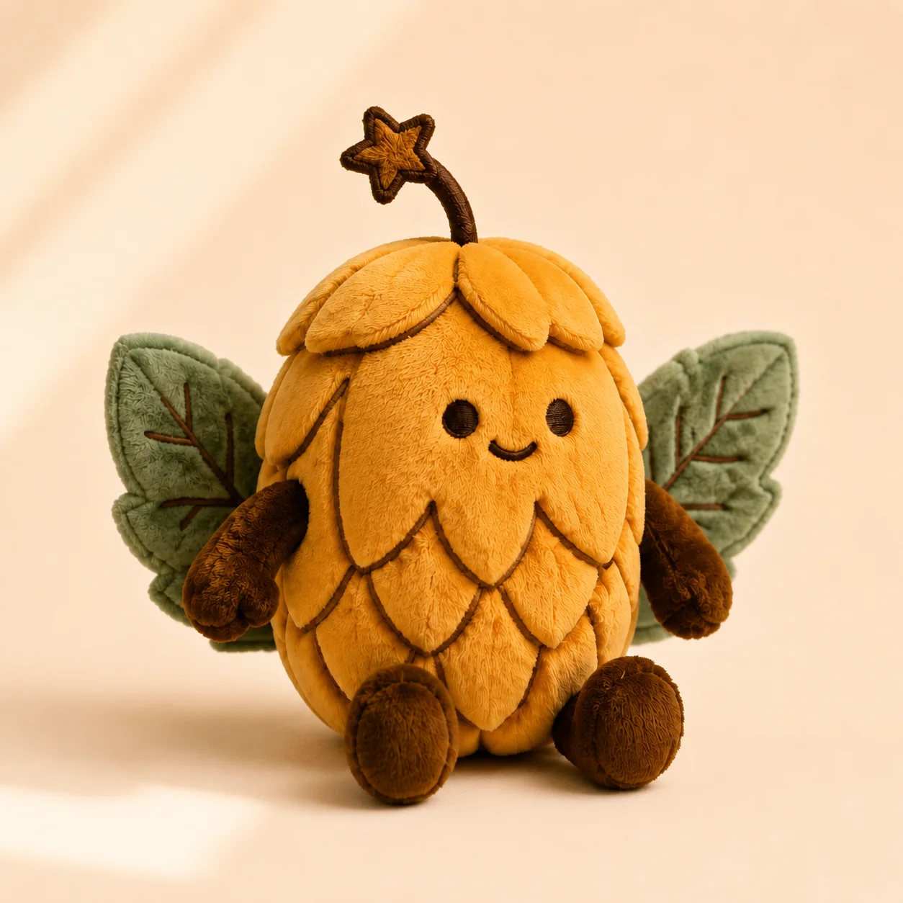

Hopper Beer Mats
9.99 USD · Set of 4
A set of four Hopper beer mats that brings the David Craft Ale mascot to every pour while helping protect the table.
David Craft Ale · Limited drop
29.99 USD One Hopper · Soft plush companion

Soft, squishy and full of personality. Bring David Craft Ale's favorite winged sidekick home and give him a permanent spot on your shelf, sofa or bar cart.
Hopper started as a drawing on a label and refused to stay there. He is the flying hop cone who never arrives empty-winged — the character that turns a row of bottles into something you recognise across a crowded room.
The plush is that drawing, made touchable. Same leaf wings, same star-tipped stem, same faintly smug expression of somebody who already knows the evening is going to run long.
Complete the set
9.99 USD · Set of 4
A set of four Hopper beer mats that brings the David Craft Ale mascot to every pour while helping protect the table.

6.99 USD · 1 opener
A compact metal bottle opener featuring Hopper, made to stay close whenever a David Craft Ale bottle needs opening.

8.99 USD · 16 oz
A David Craft Ale pint glass featuring Hopper, ready to give the pour a proper home and the shelf more personality.